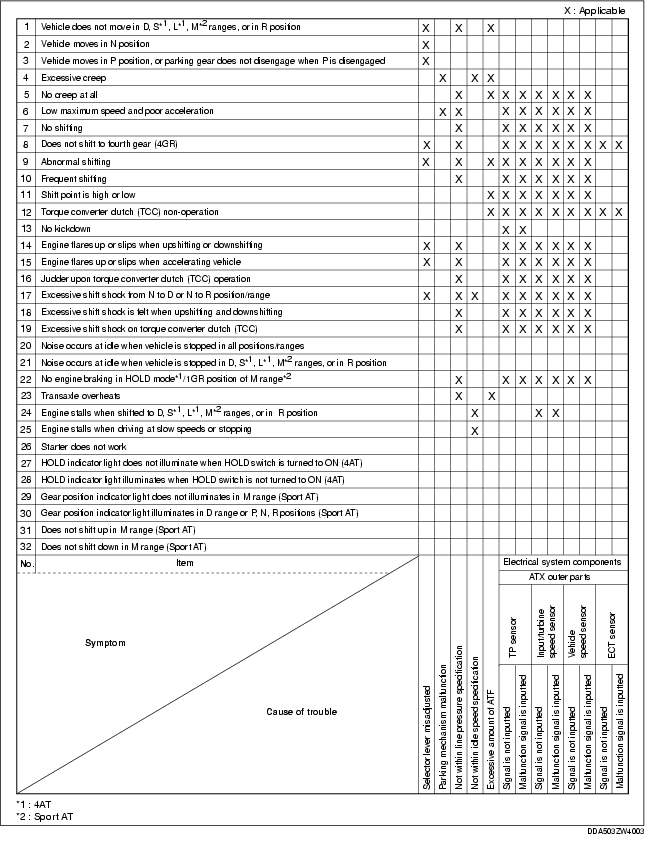

Mazda2
service manual
Search the manual
Home
Workshop Manual
Transmission/transaxle
Symptom troubleshooting [FN4A-EL]
Quick diagnosis chart [FN4A-EL]
Quick diagnosis chart [FN4A-EL]

Previous
Symptom troubleshooting item table [FN4A-EL]
Next
No.1 vehicle does not move in D, S, L, M ranges, or in R position [FN4A-EL]
Also listed under:
Troubleshooting / Transmission/transaxle
.